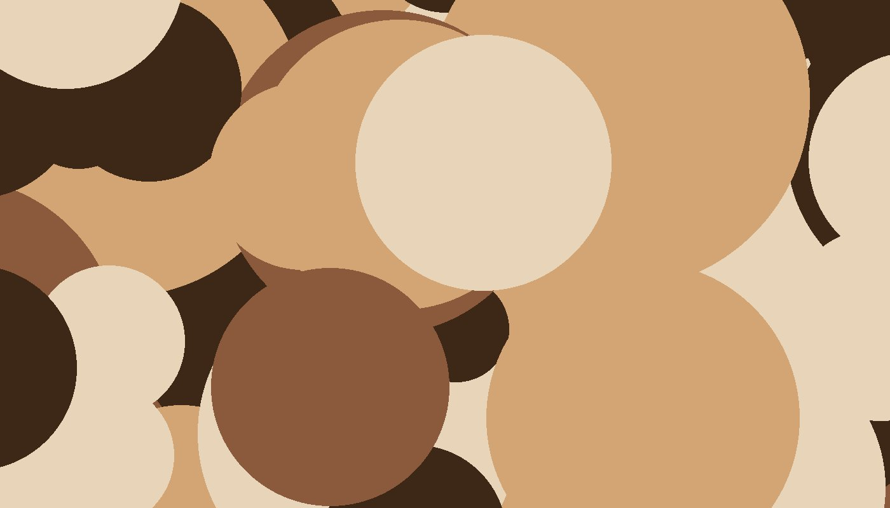
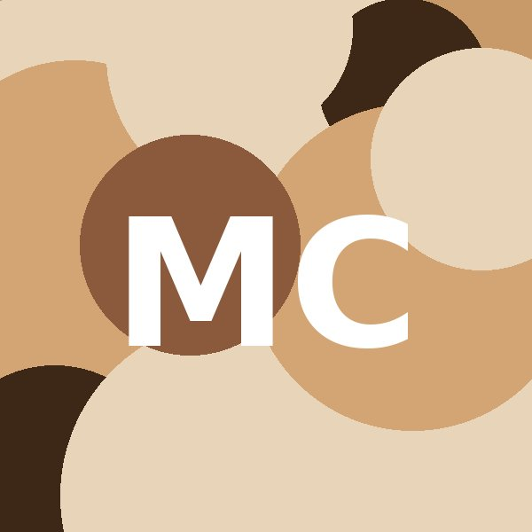
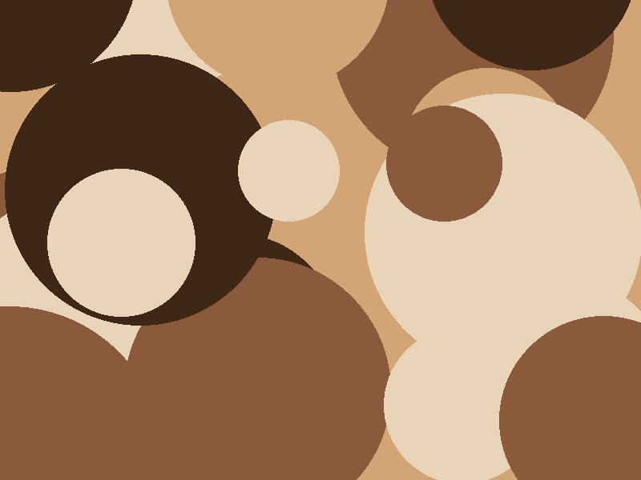
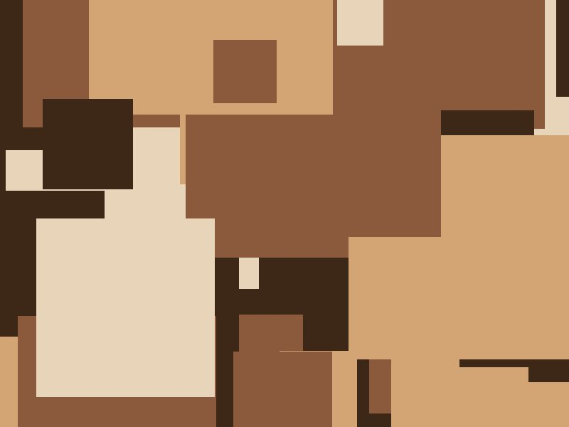

Maya Chen works at the seam between landscape and memory. Her large-scale mixed media paintings layer acrylic, oil, charcoal, and salvaged paper into surfaces that feel weathered the moment they are made.
Born in Vancouver, BC and raised on the Oregon coast, Maya moved to Portland in 2014 to study at PNCA. Her work has shown at Alberta Street Gallery, the Portland Building, and in group exhibitions across the Pacific Northwest.
She teaches a Saturday community painting class at the Multnomah Arts Center and runs a small open studio out of her home in the Cully neighborhood. When not painting, she is usually out walking somewhere green and slightly damp.

